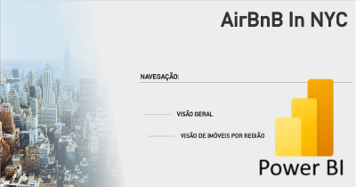
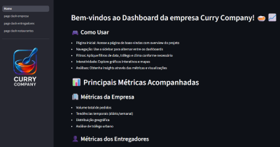

Linguagem de Programação e Banco de Dados
- Python com foco em análise de dados
- Web scrapping com Python
- SQL para query e extração de dados
- R para modelagem estatística
- Banco de dados SQLite e MySQL

Nessa página, eu demonstro minhas habilidades em resolver problemas de negócio
utilizando conceitos e ferramentas da Análise de Dados, através de projetos com dados
públicos.
Você vai encontrar também minhas experiências profissionais, habilidades,
ferramentas e conceitos envolvendo a Análise de Dados.
Sinta-se à vontade para entrar em contato através dos links no final da página.
Meu nome é Matheus Melo Borges, sou formado em Engenharia de Automação.
Com mais de sete anos de experiência profissional, atuo como Supervisor na Easymine, focado na melhoria contínua e gestão. Impulsiono a inovação e a eficiência operacional por meio da análise de dados, sempre alinhado aos valores e objetivos da empresa.
No meu papel atual, gerencio e analiso dados para aprimorar nossos produtos e a eficiência operacional. Minhas competências em Microsoft Power BI, SQL, Python e Excel têm sido cruciais para o desenvolvimento de relatórios estratégicos e dashboards interativos, que permitem monitorar o desempenho da equipe, otimizar a produtividade e obter insights valiosos.
Promovo um ambiente colaborativo e comunicação eficaz na busca de soluções inovadoras, garantindo a troca de ideias e soluções claras. Valorizo o aprendizado contínuo e busco aprimorar minhas competências para entregas mais otimizadas e eficientes.
Desenvolvimento de análises para acompanhamento de indicadores de performance da equipe.
Extração de dados em plataformas de serviço para desenvolvimento de relatórios focado em demandas internas da empresa.
Desenvolvimento de análises de dados para monitoramento da qualidade de dados, com foco nos produtos da empresa.
Análise de dados para desenvolvimento de melhoria de produtos da empresa.

Dados de locação de imóveis por temporada na
plataforma AirBnB para a cidade de Nova York

Dashboard completo desenvolvido em Python com Streamlit para análise de dados operacionais da Curry Company, uma empresa fictícia de delivery de comida, modelo Marketplace. O projeto oferece insights detalhados sobre performance de entregas, satisfação de clientes e métricas operacionais através de visualizações interativas.